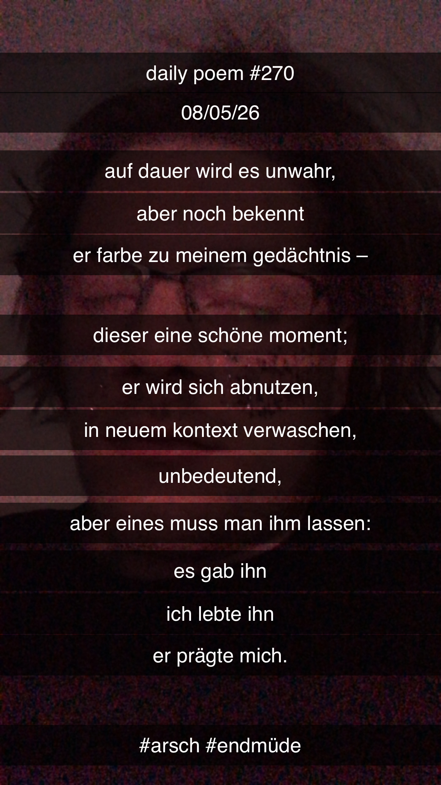

Auf Dauer wird es unwahr
[270]Auf Dauer wird es unwahr,
Aber noch bekennt
Er Farbe zu meinem Gedächtnis –
Dieser eine schöne Moment;
Er wird sich abnutzen,
In neuem Kontext verwaschen –
Unbedeutend –
Aber eines muss man ihm lassen:
Es gab ihn –
Ich lebte ihn –
Er prägte mich.
